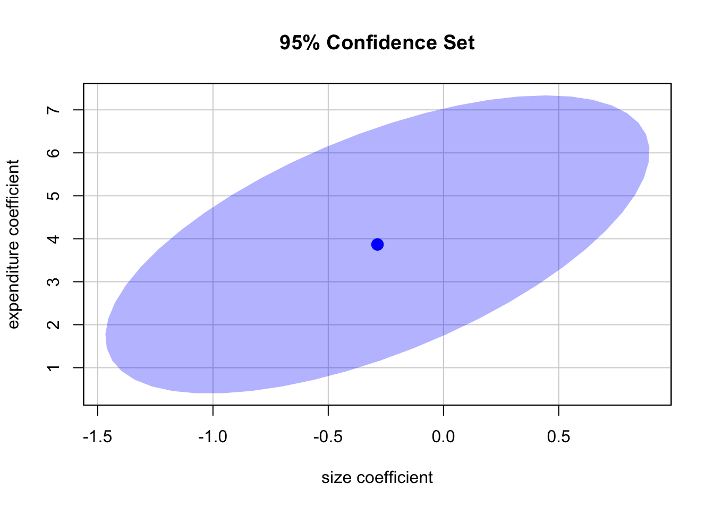
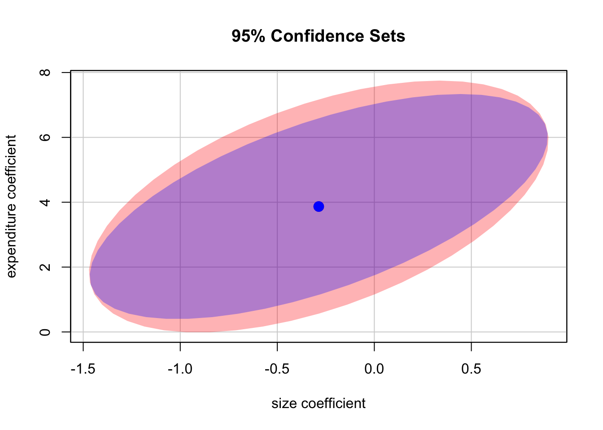

2.4 Confidence Sets for Multiple Coefficients
Based on the \(F\)-statistic that we have previously encountered, we can specify confidence sets. Confidence sets are analogous to confidence intervals for single coefficients. As such, confidence sets consist of combinations of coefficients that contain the true combination of coefficients in, say, \(95\%\) of all cases if we could repeatedly draw random samples, just like in the univariate case. Put differently, a confidence set is the set of all coefficient combinations for which we cannot reject the corresponding joint null hypothesis tested using an \(F\)-test.
The confidence set for two coefficients an ellipse which is centered around the point defined by both coefficient estimates. Again, there is a very convenient way to plot the confidence set for two coefficients of model objects, namely the function confidenceEllipse() from the car package.
We now plot the \(95\%\) confidence ellipse for the coefficients on size and expenditure from the regression conducted above. By specifying the additional argument fill, the confidence set is colored.
# draw the 95% confidence set for coefficients on size and expenditure
confidenceEllipse(model,
fill = T,
lwd = 0,
which.coef = c("size", "expenditure"),
main = "95% Confidence Set")
We see that the ellipse is centered around \((-0.29, 3.87)\), the pair of coefficients estimates on \(size\) and \(expenditure\). What is more, \((0,0)\) is not element of the \(95\%\) confidence set so that we can reject \(H_0: \beta_1 = 0, \ \beta_3 = 0\).
By default, confidenceEllipse() uses homoskedasticity-only standard errors. The following code chunk shows how compute a robust confidence ellipse and how to overlay it with the previous plot.
# draw the robust 95% confidence set for coefficients on size and expenditure
confidenceEllipse(model,
fill = T,
lwd = 0,
which.coef = c("size", "expenditure"),
main = "95% Confidence Sets",
vcov. = vcovHC(model, type = "HC1"),
col = "red")
# draw the 95% confidence set for coefficients on size and expenditure
confidenceEllipse(model,
fill = T,
lwd = 0,
which.coef = c("size", "expenditure"),
add = T)
As the robust standard errors are slightly larger than those valid under homoskedasticity only in this case, the robust confidence set is slightly larger. This is analogous to the confidence intervals for the individual coefficients.